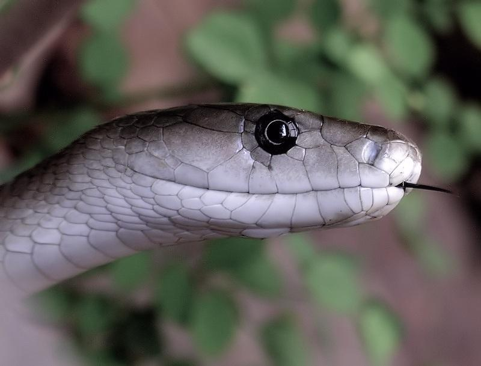

Venom HazardHow dangerous is the venom itself?81.3
Rank
6 of 78
6 of 78
Potency95.3
LD50 of 0.05 mg/kg (SC injection).
Quantity67.4
Up to 100 mg of venom in a single milking.
Black mamba ranks 6 of 78 for Venom Hazard and 55 of 91 for Human Risk.

LD50 of 0.05 mg/kg (SC injection).
Up to 100 mg of venom in a single milking.
Rated 5 out of 10. Widespread in African savanna, sometimes near settlements; met occasionally.
Level 4 of 5: Bites readily when disturbed, or holds still and strikes when stepped on.
Very fast (under 1 h to a few h). Slow onset scores higher because people often delay treatment.
Regional.
An equal average of Venom Hazard and Human Risk. Always read it with the two scores beside it.
Scores are relative to the species on this site. Bars run from 0 to 100. How these scores are built.
Widely cited as one of the fastest-acting venoms; untreated bites have historically caused death in under an hour to a few hours via respiratory paralysis.
Antivenom source. SAIMR polyvalent.
| Measure | Value | Source | Grade |
|---|---|---|---|
| LD50 (mice) | 0.05 mg/kg · SC | Origin not traced (value carried from v1); route assumed | D |
| Venom yield | 50–100 mg | Ernst & Zug (1996) compilation (secondary); basis not stated; reported range across specimens | C |
| Deaths a year | – | No sourced figure yet. |
At least one input has no traceable source yet. Treat the Venom Hazard as provisional.
Flags: LD50 sources differ 6.4×; LD50 has no traceable source; Yield sources differ 4.0×.
Closest in both Venom Hazard and Human Risk.